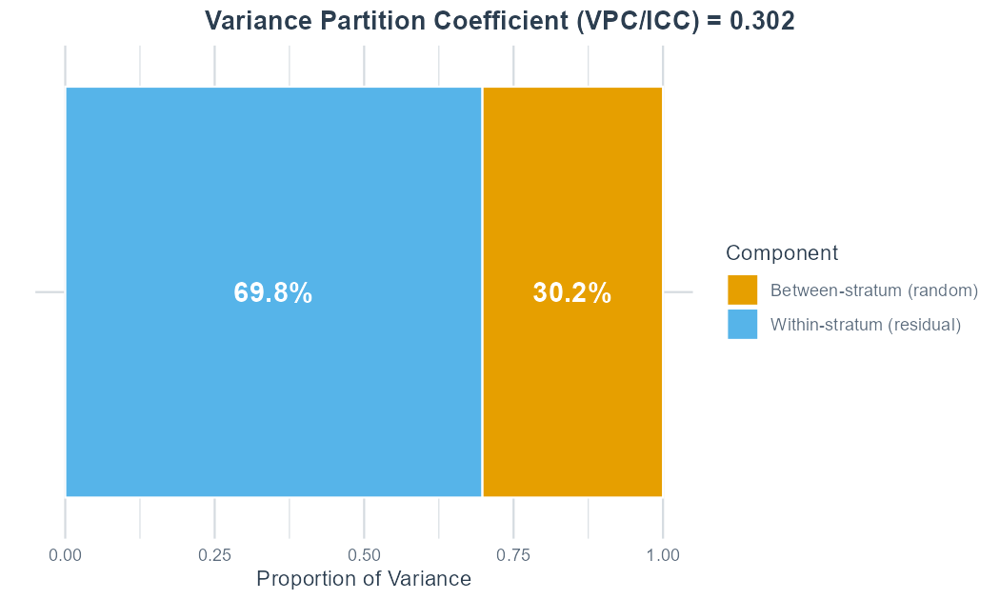
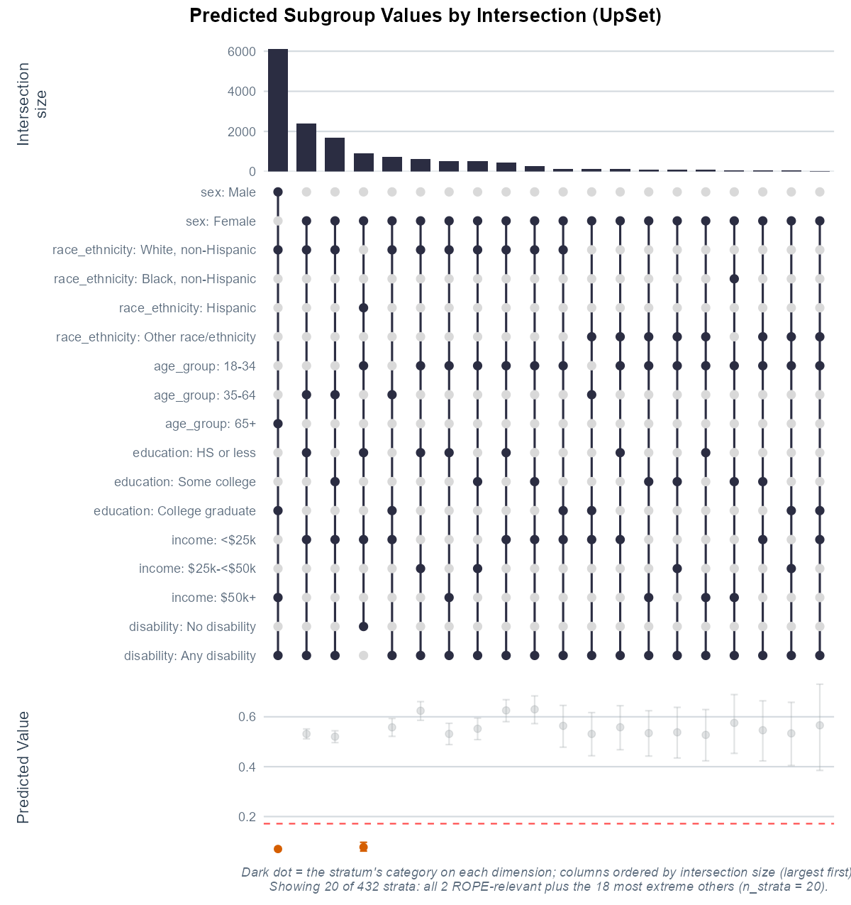
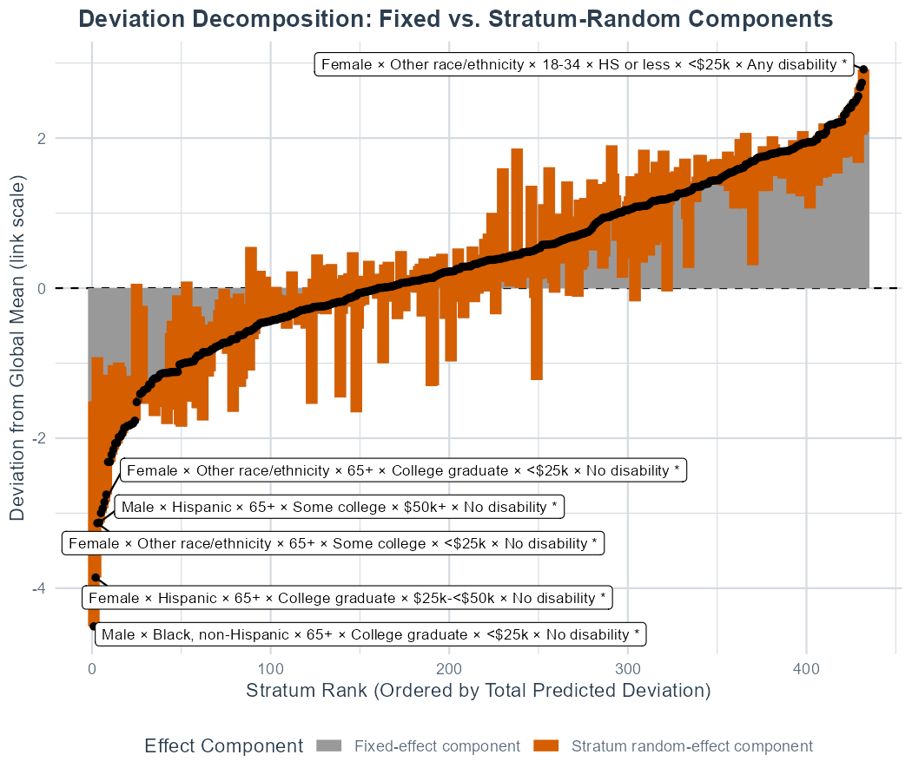

Case study: BRFSS mental distress
Hamid Bulut
2026-07-19
Source:vignettes/case_study_brfss.Rmd
case_study_brfss.RmdThis case uses the 2024 Behavioral Risk Factor Surveillance System (BRFSS), a U.S. health survey released by the Centers for Disease Control and Prevention. The outcome is frequent mental distress: 14 or more of the past 30 days when mental health was not good.
The intersectional strata combine respondent sex, race/ethnicity, age, education, income, and disability. The question is whether mental distress is concentrated in particular social strata, and whether any of these intersections remain once the additive main effects of the dimensions are included.
CDC’s 2024 BRFSS page provides the data and codebook:
Data preparation
BRFSS distributes the public-use file as a zipped SAS transport
(.XPT) file (~1 GB unzipped).
Recode and collapse strata
The outcome uses _MENT14D, CDC’s three-level calculated
mental-health status: zero days, 1-13 days, and 14+ days when mental
health was not good. The binary outcome below codes 14+ days as 1 and
the two lower categories as 0.
The core BRFSS file contains respondent sex (SEXVAR),
not a general gender identity measure. Optional SOGI modules can support
a different analysis, but they are not available for all states in the
national core file.
The full six-dimension crossing can create many sparse cells. For the case-study version, we collapse the highest-cardinality dimensions before fitting:
- Race/ethnicity: White non-Hispanic, Black non-Hispanic, Hispanic, and other.
- Age: 18-34, 35-64, and 65+.
- Education: high school or less, some college, and college graduate.
- Income: less than $25k, $25k to less than $50k, and $50k+.
- Disability: any vs. none, from the six core disability items.
disability_vars <- c("DEAF", "BLIND", "DECIDE", "DIFFWALK", "DIFFDRES", "DIFFALON")
disability_items <- brfss_raw[disability_vars]
any_disability <- rowSums(disability_items == 1, na.rm = TRUE) > 0
all_answered_no <- rowSums(disability_items == 2, na.rm = TRUE) == length(disability_vars)
brfss_reduced <- brfss_raw |>
transmute(
frequent_distress = case_when(
.data[["_MENT14D"]] == 3 ~ 1L,
.data[["_MENT14D"]] %in% c(1, 2) ~ 0L,
TRUE ~ NA_integer_
),
sex = factor(
case_when(SEXVAR == 1 ~ "Male", SEXVAR == 2 ~ "Female", TRUE ~ NA_character_),
levels = c("Male", "Female")
),
race_ethnicity = factor(
case_when(
.data[["_IMPRACE"]] == 1 ~ "White, non-Hispanic",
.data[["_IMPRACE"]] == 2 ~ "Black, non-Hispanic",
.data[["_IMPRACE"]] == 5 ~ "Hispanic",
.data[["_IMPRACE"]] %in% c(3, 4, 6) ~ "Other race/ethnicity",
TRUE ~ NA_character_
),
levels = c("White, non-Hispanic", "Black, non-Hispanic",
"Hispanic", "Other race/ethnicity")
),
age_group = factor(
case_when(
.data[["_AGEG5YR"]] %in% 1:3 ~ "18-34",
.data[["_AGEG5YR"]] %in% 4:9 ~ "35-64",
.data[["_AGEG5YR"]] %in% 10:13 ~ "65+",
TRUE ~ NA_character_
),
levels = c("18-34", "35-64", "65+")
),
education = factor(
case_when(
EDUCA %in% 1:4 ~ "HS or less", EDUCA == 5 ~ "Some college",
EDUCA == 6 ~ "College graduate", TRUE ~ NA_character_
),
levels = c("HS or less", "Some college", "College graduate")
),
income = factor(
case_when(
.data[["_INCOMG1"]] %in% 1:2 ~ "<$25k",
.data[["_INCOMG1"]] %in% 3:4 ~ "$25k-<$50k",
.data[["_INCOMG1"]] %in% 5:7 ~ "$50k+",
TRUE ~ NA_character_
),
levels = c("<$25k", "$25k-<$50k", "$50k+")
),
disability = factor(
case_when(
any_disability ~ "Any disability", all_answered_no ~ "No disability",
TRUE ~ NA_character_
),
levels = c("No disability", "Any disability")
)
) |>
filter(
!is.na(frequent_distress), !is.na(sex), !is.na(race_ethnicity),
!is.na(age_group), !is.na(education), !is.na(income), !is.na(disability)
)The complete-case recode yields 352,714 adults in 432 intersectional strata (only 1 stratum has fewer than 20 adults, 20 fewer than 50).
Fit the MAIHDA
The analysis is a single call, a binomial MAIHDA fitting a null model (strata only) and an adjusted model (the six dimensions additive main effects), on the full individual data:
brfss_fit <- maihda(
frequent_distress ~ sex + race_ethnicity + age_group + education + income + disability +
(1 | sex:race_ethnicity:age_group:education:income:disability),
data = brfss_reduced, family = "binomial", interactions = "BH"
)
brfss_fit
generics::glance(brfss_fit)| Statistic | Null (Model 1) | Adjusted (Model 2) |
|---|---|---|
| Intercept | -1.575 | -1.634 |
| Between-stratum variance | 0.993 | 0.043 |
| Between-stratum SD | 0.997 | 0.207 |
| VPC/ICC | 0.232 | 0.013 |
| PCV (null -> adjusted) | 0.957 | |
| AUC | 0.756 | 0.755 |
| MOR | 2.587 | 1.218 |
The null model gives a VPC of 0.232 (about 23.2% of the latent-scale variation lies between strata), with AUC 0.76 and MOR 2.59. Adding the six dimensions’ additive main effects collapses the between-stratum variance from 0.99 to 0.04, a PCV of 95.7%. Almost all of the between-stratum inequality is additive and the residual intersectional component is small (residual VPC 1.3%, residual MOR 1.22).
Which strata drive the pattern?
maihda_table() ranks strata by their null-model
predicted risk (the simple-intersectional stratum predictions; pass
which = "adjusted" to rank by the adjusted model).
| Rank | Stratum | Predicted | Observed | N |
|---|---|---|---|---|
| 1 | Female × White, non-Hispanic × 18-34 × Some college × <$25k × Any disability | 0.630 | 0.637 | 284 |
| 2 | Female × White, non-Hispanic × 18-34 × HS or less × <$25k × Any disability | 0.626 | 0.630 | 457 |
| 3 | Female × White, non-Hispanic × 18-34 × HS or less × $25k-<$50k × Any disability | 0.624 | 0.627 | 636 |
| 4 | Female × Black, non-Hispanic × 18-34 × Some college × $50k+ × Any disability | 0.576 | 0.607 | 61 |
| 5 | Female × Other race/ethnicity × 18-34 × College graduate × <$25k × Any disability | 0.566 | 0.640 | 25 |
| 6 | Female × White, non-Hispanic × 18-34 × College graduate × <$25k × Any disability | 0.564 | 0.578 | 128 |
| 7 | Female × Other race/ethnicity × 18-34 × HS or less × <$25k × Any disability | 0.558 | 0.574 | 115 |
| 8 | Female × White, non-Hispanic × 35-64 × College graduate × <$25k × Any disability | 0.558 | 0.560 | 730 |
| 9 | Female × White, non-Hispanic × 18-34 × Some college × $25k-<$50k × Any disability | 0.552 | 0.556 | 504 |
| 10 | Female × Other race/ethnicity × 18-34 × Some college × <$25k × Any disability | 0.546 | 0.576 | 59 |
The highest-risk strata combine younger age, female sex, low income, and disability (top predicted prevalence around 63.0%) and race/ethnicity varies across the top group. These strata are high-risk because they stack several high-risk main-effect categories, not necessarily because of a large residual interaction.
The interaction table instead asks which strata depart from the additive main-effect prediction:
| Stratum | Interaction | Lower | Upper | Direction | ROPE (±0.4) |
|---|---|---|---|---|---|
| Female × Hispanic × 18-34 × HS or less × <$25k × No disability | -0.669 | -0.866 | -0.472 | below | relevant |
| Male × White, non-Hispanic × 65+ × College graduate × $50k+ × Any disability | -0.597 | -0.691 | -0.503 | below | relevant |
| Female × Hispanic × 18-34 × HS or less × <$25k × Any disability | -0.531 | -0.717 | -0.345 | below | inconclusive |
| Male × Hispanic × 18-34 × HS or less × <$25k × Any disability | -0.508 | -0.721 | -0.294 | below | inconclusive |
| Female × White, non-Hispanic × 18-34 × HS or less × $25k-<$50k × Any disability | 0.428 | 0.280 | 0.577 | above | inconclusive |
| Male × White, non-Hispanic × 65+ × HS or less × $50k+ × No disability | -0.391 | -0.600 | -0.182 | below | inconclusive |
| Male × White, non-Hispanic × 65+ × Some college × $50k+ × Any disability | -0.388 | -0.507 | -0.269 | below | inconclusive |
| Male × White, non-Hispanic × 65+ × College graduate × <$25k × No disability | 0.386 | 0.107 | 0.664 | above | inconclusive |
| Male × White, non-Hispanic × 65+ × HS or less × $50k+ × Any disability | -0.376 | -0.516 | -0.236 | below | inconclusive |
| Male × White, non-Hispanic × 35-64 × College graduate × $50k+ × No disability | -0.372 | -0.430 | -0.314 | below | inconclusive |
| Female × White, non-Hispanic × 18-34 × HS or less × $25k-<$50k × No disability | 0.365 | 0.222 | 0.508 | above | inconclusive |
| Female × White, non-Hispanic × 35-64 × College graduate × <$25k × Any disability | 0.360 | 0.223 | 0.497 | above | inconclusive |
| Female × White, non-Hispanic × 65+ × College graduate × $50k+ × Any disability | -0.342 | -0.430 | -0.254 | below | inconclusive |
| Male × Hispanic × 35-64 × College graduate × $50k+ × Any disability | 0.337 | 0.108 | 0.566 | above | inconclusive |
| Female × Hispanic × 35-64 × HS or less × <$25k × Any disability | -0.336 | -0.461 | -0.211 | below | inconclusive |
How many interactions actually matter? A ROPE
Flagging asks only whether an interaction differs statistically
significantly from zero. On the full data the FDR screen flags 55 of 432
strata. The more interesting question is whether a departure is
large enough to matter. A region of practical
equivalence (ROPE) sets a smallest intersectional effect of
interest on the log-odds scale and classifies each stratum’s interval as
practically relevant (outside the ROPE),
negligible (inside it), or
inconclusive (Schuirmann 1987; Kruschke 2018). The
rope argument of maihda_interactions() adds
this decision column:
maihda_interactions(brfss_fit, rope = 0.4) # ROPE = +/- 0.4 log-odds (OR ~ 1.5)At a ROPE of ±0.4 log-odds (an odds ratio within roughly 0.67–1.49 of the additive expectation), 2 of 432 strata are practically relevant, 266 negligible, and 164 inconclusive; at a stricter ±0.2 (OR ≈ 1.22) the relevant count rises to 15. The full data is precise enough that the ROPE can actually resolve a handful of strata as practically relevant, where the per-stratum interactions are genuinely largest (up to about 0.67 on the log-odds scale). Even so, the great majority are negligible or inconclusive: consistent with the high PCV (95.7%), the structure is overwhelmingly additive, and only a small number of intersections carry a practically meaningful departure from additivity.
Plot the case study
The variance partition shows how much of the latent-scale variation lies between strata:

Variance partition (VPC): share of latent-scale variation between intersectional strata.
The next two views highlight strata by the ROPE
decision rather than the zero-centred flag:
highlight_by = "rope" marks the strata classified
practically relevant at rope = 0.4 – here just the
2 strata whose interaction interval clears ±0.4. (Compare the FDR flag,
which marks 55.) The first is an UpSet-style view that
swaps the unreadable intersectional axis labels for a category matrix –
a top bar of stratum sizes, a matrix of which level of each dimension
defines the stratum, and the predicted values below, all sharing one
column order.
plot(brfss_fit, type = "upset", n_strata = 20, select = "deviation",
highlight_interactions = TRUE, highlight_by = "rope", rope = 0.4)
plot(brfss_fit, type = "effect_decomp",
highlight_interactions = TRUE, highlight_by = "rope", rope = 0.4)
UpSet-style predicted-risk view: read each stratum’s defining category off the matrix instead of a long text label. Columns are the most extreme-risk strata plus the ROPE-relevant ones (±0.4), which are highlighted.

Effect decomposition: additive (fixed-effect) vs. residual stratum (interaction) component per stratum; the two ROPE-relevant strata (±0.4) are labelled.
The UpSet view shows the predicted-risk inequality with each stratum’s defining categories read off the matrix; the effect-decomposition plot separates the additive (fixed-effect) part from the residual stratum (interaction) part, with the ROPE-relevant strata picked out.
Results
We fitted two logistic MAIHDA models on 352,714 adults from the 2024 BRFSS, nested within 432 intersectional strata defined by the cross-classification of sex, race/ethnicity, age, education, household income, and disability. In the simple intersectional model, the variance partition coefficient indicated that 23.2% of the variance in the latent propensity for frequent mental distress lay between intersectional strata. The strata had moderate discriminatory accuracy (area under the ROC curve, AUC = 0.76) and a median odds ratio of 2.59.
After adding the additive main effects of the six dimensions, the between-stratum variance fell from 0.99 to 0.04, a proportional change in variance (PCV) of 95.7% (residual VPC 1.3%). Almost all of the between-stratum inequality was additive. The highest-risk strata combined younger age, female sex, low income, and disability (top predicted prevalence 63.0%).
Per-stratum interaction effects were small (largest ≈ 0.67 on the log-odds scale). The FDR screen flagged 55 of 432 strata; a region of practical equivalence (±0.4 log-odds) classified 2 strata as practically relevant, 266 as negligible, and 164 as inconclusive. The defensible conclusion is a predominantly additive structure, with a small number of intersections showing a practically meaningful departure from additivity.
References
- Centers for Disease Control and Prevention. Behavioral Risk Factor Surveillance System: 2024 Survey Data and Documentation.
- Evans, C. R., Leckie, G., Subramanian, S. V., Bell, A., & Merlo, J. (2024). A tutorial for conducting intersectional multilevel analysis of individual heterogeneity and discriminatory accuracy (MAIHDA). SSM - Population Health, 26, 101664.
- Evans, C. R., Williams, D. R., Onnela, J. P., & Subramanian, S. V. (2018). A multilevel approach to modeling health inequalities at the intersection of multiple social identities. Social Science & Medicine, 203, 64-73.
- Merlo, J. (2018). Multilevel analysis of individual heterogeneity and discriminatory accuracy (MAIHDA) within an intersectional framework. Social Science & Medicine, 203, 74-80. ```